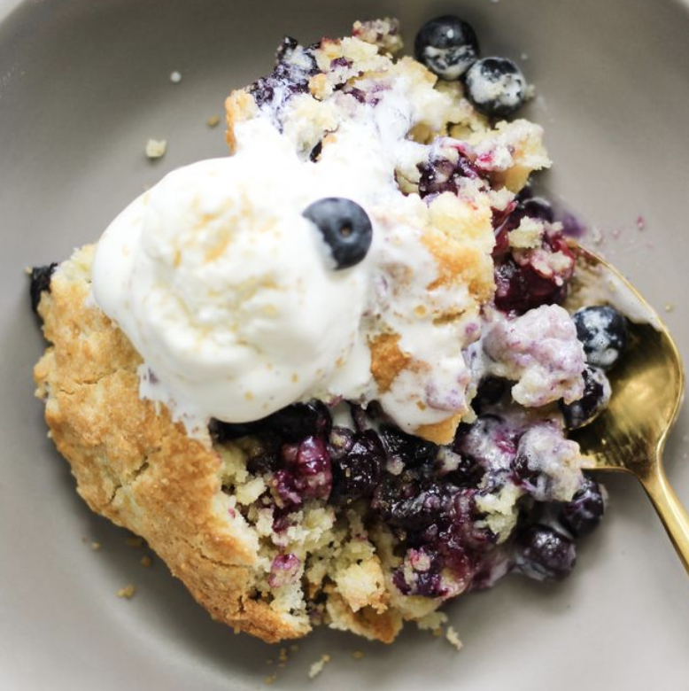

BLUEBERRY COBBLER

INGREDIENTS
¾ cup all-purpose flour, spooned and leveled
¼ cup plus 2 tablespoons whole wheat flour, spooned and leveled
2½ tablespoons cane sugar
1¼ teaspoons baking powder
½ teaspoon sea salt
½ cup full-fat coconut milk
4 tablespoons unsalted butter, freeze for 1 hour, grate on large holes of a box grater, plus more melted butter for brushing
Coarse sugar or additional cane sugar, for sprinkling
2 pints (4 cups) fresh blueberries
2 tablespoons cane sugar
2 tablespoons cornstarch
1 tablespoon fresh lemon juice
1 teaspoon vanilla extract
Vanilla ice cream
INSTRUCTIONS
-
Preheat the oven to 400°F and grease an 8x8-inch baking dish.
-
In a large bowl, whisk together the all-purpose flour, whole wheat flour, sugar, baking powder, lemon zest, and salt. Form a well in the center and add the coconut milk and grated butter. Use a spatula to fold and form the mixture into a cohesive ball of dough.
-
Place the dough on a lightly floured surface and use a lightly floured rolling pin to roll it out into a ½-inch-thick circle. Use a 2¼-inch round biscuit cutter to cut out 9 to 11 biscuits, rerolling the scraps and dusting the surface with more flour as necessary. Transfer the biscuits to a parchment-lined plate or baking sheet and refrigerate while you make the filling.
-
Make the filling: In a medium bowl, combine the blueberries, sugar, cornstarch, lemon juice, and vanilla and toss until the fruit is well coated. Transfer the mixture to the prepared baking dish and arrange the biscuits evenly on top. Brush the tops of the biscuits with melted butter and sprinkle with coarse sugar.
-
Bake for 25 to 35 minutes, or until the fruit is bubbling and the biscuits are golden brown. Allow to cool for 15 minutes before serving.
-
Serve with vanilla ice cream.